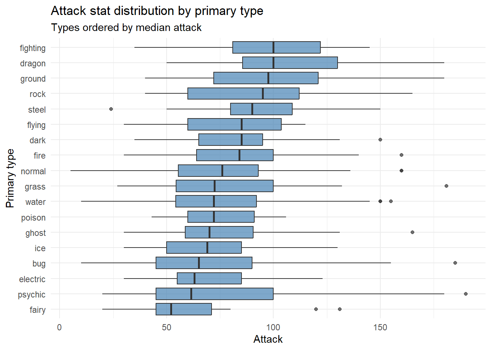
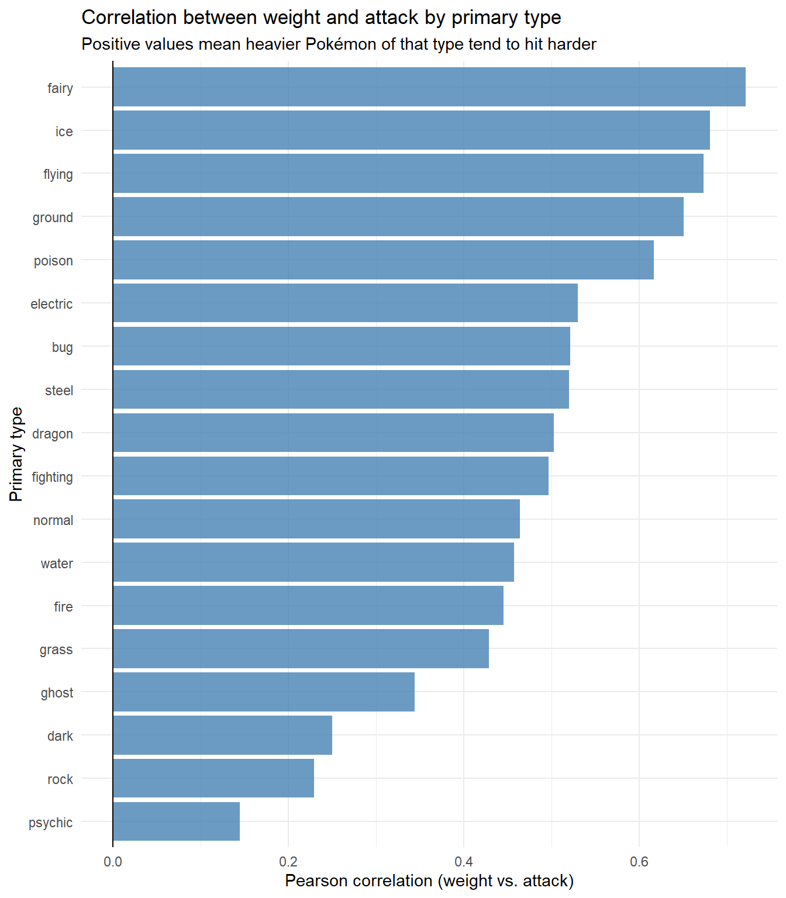
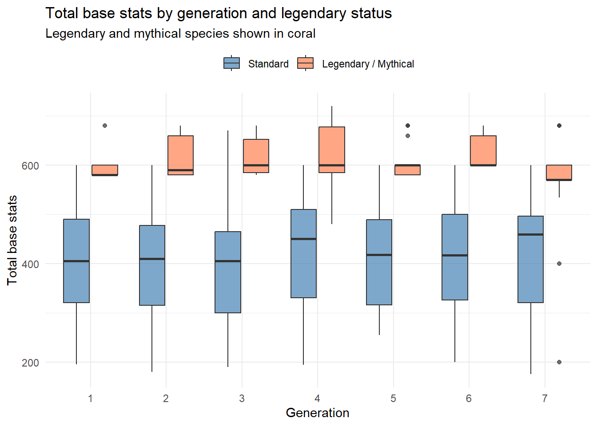
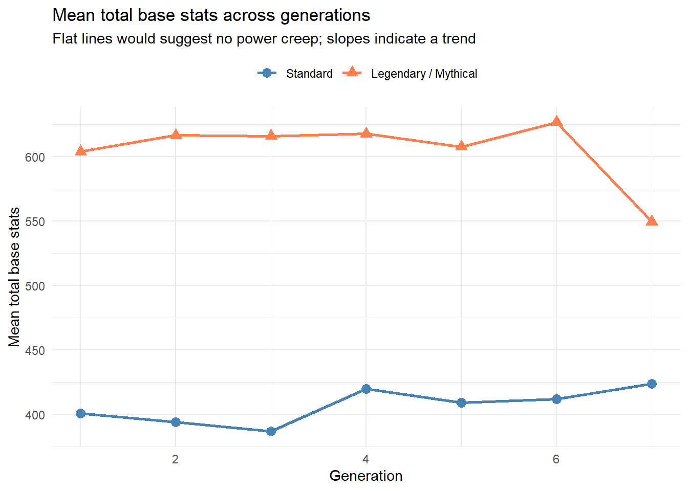

Pokémon and Their Strengths by Type, Stats, and Generation
INFO 526 - Summer 2026 - Final Project
Pokémon stats by type, weight, and generation
Abstract
This project investigates two questions about Pokémon species data spanning Generations 1 through 7. First, does a Pokémon’s primary type predict how hard it hits — in other words, is the reputation of types like Fighting and Dragon for raw power actually reflected in the numbers? Second, do legendary and mythical Pokémon consistently outperform standard species in total base stats across every generation, and is there any sign of “power creep” where later generations introduced stronger Pokémon on average? Using the TidyTuesday Pokémon dataset (949 species, 26 variables) and legendary flags sourced from PokeAPI, we explore these questions through a combination of boxplots, faceted scatterplots, and generation trend charts.
Data Introduction
The dataset was released as part of the TidyTuesday project for the week of April 1, 2025, and originates from the pokemon R package, which itself pulls data from PokeAPI. It contains 949 rows and 26 columns, with one row per Pokémon species.
Key variables used in this project:
| Variable | Type | Description |
|---|---|---|
type_1 |
Categorical (18 levels) | Primary type (e.g. Fire, Fighting, Water) |
attack |
Numeric | Base attack stat |
weight |
Numeric | Weight in kilograms |
hp, defense, special_attack, special_defense, speed |
Numeric | Remaining five base stats |
total_stats |
Numeric (derived) | Sum of all six base stats |
generation_id |
Categorical (1–7) | Generation the species was introduced in |
legendary |
Categorical (derived) | Whether the species is legendary or mythical, joined from PokeAPI |
Two data preparation steps were required before analysis. First, total_stats was computed as the row-wise sum of all six base stats. Second, the source dataset contains no legendary or mythical flag; these booleans were fetched from the PokeAPI pokemon-species endpoint and joined onto the dataset by species_id. Additionally, 147 rows with a missing generation_id are excluded from the generation-level analysis in Question 2, but retained for Question 1 since generation is not a variable there.
Approach
Our main approach is to attach the flags from the PokeAPI and then directly start mutating, summarizing, and plotting the data. The data is set up rather cleanly and all we have to do is to plot by our required variables from the questions. The main benefit of the data we are using is that our plots will not be distinguished by color, especially given that there are 18 types of Pokemon. We are instead choosing plots that conveniently distinguish by size and if color is used, no more than two are chosen. We are also avoiding any low contrast colors for easy viewing off the white background for accessibility.
Question 1: Do type, attack, and weight correlate?
Is there a relationship between a Pokémon’s primary type, its attack stat, and its weight?
Attack by type
Analysis Q1 Pt. 1
Attack does seem to vary by type, and it seems my initial thoughts were somewhat inline with the data. As we can see, Fighting and Dragon are the highest median attackers, while Fairy, Psychic, and Lightning types are the lowest median attackers. While this is true at the median level and by distribution, their respective outliers also show there are competitors of the weaker types to match the stronger “strongest” Pokémon at those high attack stat levels.
A box-and-whisker plot seemed to be a rather fitting plot for this type of data, as there is a large amount of Pokémon in general, however, Pokémon tend to vary wildly in strength by stats, and oftentimes have outliers that are not apparent. This type of plot lets us see the spread, outliers, and the median, which can give us a great deal of information visually off of a quick glance.
Weight vs. Attack by type

Analysis Q1 Pt. 2
Here we can see there is a deviation from the proposal. Intially a faceted scatter plot was used, but was ultimately decided against after seeing how visually cluttered the plot was. It technically told the right story, but was just too hard to read, and, some Pokémon reaching above 999kg compressed the data into a small chunk on the left side of the x-axis, making it unreadable. A log scale did help, but felt like it still was visually overstimulating. Instead, the best route forward seemed to be a Pearson correlation coefficient graph. In this plot, a number between -1 and 1 is generated basedd off of how closely the two variables move on average. A value near 1 means heavier Pokémon of that type tend to consistently hit harder, and a value near 0 means that there is little to no relation between weight and attack for that type.
What stands out immediately is that every type shows at least some positive correlation, meaning heavier Pokémon do tend to have higher attack across the board, but the strength of that relationship varies a lot by type. Fairy, Ice, Flying, Ground, and Poison sit at the top with correlations above 0.6, which is a notably strong relationship. This is somewhat surprising, as Fairy types are not typically thought of as physically powerful, yet within that type, the heavier ones hit considerably harder. On the lower end, Psychic, Rock, and Dark types show the weakest correlations, suggesting weight is a poor predictor of attack for those types. Psychic in particular, which is often depicted as lightweight, floating, or spirit-like, shows barely any relationship at all, which fits thematically even if the Fairy result does not.
Question 2: Legendary status, generation, and total stats
Do legendary Pokémon consistently have higher total base stats, and is there evidence of power creep across generations?
Total stats by generation and legendary status

Analysis Q2 Pt. 1
Looking at the boxplot, the answer to the first part of our question is pretty clear: legendary and mythical Pokémon consistently sit above standard Pokémon in total base stats across every single generation without exception. The gold boxes never overlap with the bulk of the blue distributions, which tells us this isn’t very close either. What is interesting though is how tight the gold boxes are compared to the blue ones. Standard Pokémon spread wildly from around 200 all the way up past 600, which makes sense, a generation includes everything from weak, early Pokémon to near-legendary Pokémon. Legendaries on the other hand tend to cluster tightly, with most generations showing their median sitting near the bottom of a compressed box. This would tell us that there appears to be a fixed power budget, typically 580 or 600 total stats, with only a few outliers pulling the whiskers out.
Mean total stats across generations

Analysis Q2 Pt. 2
The line chart does a good job showcasing the power creep story over time, however, there is no true power creep. The chart shows that over time, Pokémon have more or less stayed similarly powerful over generations. There is some spike for legendaries at generation 6, but they then drop back down, even over-correcting a bit. For base Pokémon, there is a bit of a spike at generation 4, but it then stabilizes around 425 mean total base stats. This answers our question about power creep quite clearly. It should be noted that these dips and spikes are over-represented given the graph limits, which are shrunk down to provide a closer zoom into the data.
Discussion Summary
Our findings were quite clear using our four plots to answer two questions:
Question 1: Do type, attack, and weight correlate? Is there a relationship between a Pokémon’s primary type, its attack stat, and its weight?
Yes, there is, with Fighting, Dragon, Ground and Rock being the strongest on average by attack stat, and Fairy, Ice, Flying, and Ground, having the largest correlation between attack and weight.
Question 2: Legendary status, generation, and total stats Do legendary Pokémon consistently have higher total base stats, and is there evidence of power creep across generations?
Yes, legendary Pokémon consistently have higher total base stats, and there is not a strong indication of power creep over time. These stats have stayed relatively stable over generations.
Through our dive into the data, we are able to answer our two questions and see that there is a general trend of attack strength by type, and weight is also a factor depending on type. We can also see that legendaries are all above their base generation Pokémon, and that there is not a power creep.